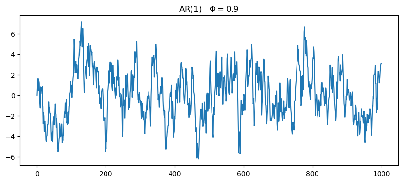
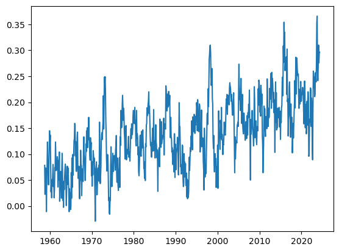

32 practice
If you don’t have it yet, please download here the meteorological data fro 2019 in Jerusalem.
33 White noise
If we randomly draw values from the same distribution we will get white noise.
34 Random walk
If we cumulatively sum the white noise, we then get a random walk
walk_binary = binary_noise.cumsum()
walk_gaussian = gaussian_noise.cumsum()
fig, ax = plt.subplots(2,1, figsize=(10,4), sharex=True)
ax[0].plot(walk_binary)
ax[0].set_title('walk binary')
ax[1].plot(walk_gaussian)
ax[1].set_title('walk gaussian')Text(0.5, 1.0, 'walk gaussian')
34.1 Differencing
Given an array
a = [a_0, a_1, a_2, ..., a_{n-1}] the operation performed by np.diff(a) can be represented as:
\Delta a = [\Delta a_1, \Delta a_2, ..., \Delta a_{n-1}] where
\Delta a_i = a_{i} - a_{i-1} \quad \text{for} \quad i = 1, 2, ..., n-1
If we difference the random walk we will get the white noise.
fig, ax = plt.subplots(2,1, figsize=(10,4), sharex=True)
ax[0].plot(binary_noise, label='original')
ax[0].plot(np.diff(walk_binary, prepend=0), label='diff', linestyle='--')
ax[0].set_title('binary')
ax[0].legend()
ax[0].set_xlim(0,100)
ax[1].plot(gaussian_noise, label='original')
ax[1].plot(np.diff(walk_gaussian, prepend=0), label='diff', linestyle='--')
ax[1].set_title('gaussian')
ax[1].legend()
ax[1].set_xlim(0,100)Another way of understanding this: the python operations cumsum and diff are each other’s inverse.
35 AR(1)
X_{t} = \phi\,X_{t-1} + \varepsilon.
This is called an Autoregressive Process of order 1, or AR(1). Here, the current value X_{t} is dependent on the immediately preceding value X_{t-1}.
# initialize time series array
ar1_series = np.zeros(n)
# set a phi value, in addition to this value you should try phi>1 or phi=0
phi = 0.9
for i in range(1, n):
ar1_series[i] = phi*ar1_series[i-1] + gaussian_noise[i]
# plot:
fig, ax = plt.subplots(figsize=(10,4))
ax.plot(ar1_series)
ax.set_title(f'AR(1)\t$\Phi={phi}$')Text(0.5, 1.0, 'AR(1)\t$\\Phi=0.9$')
35.1 AR(p)
The next thing to do is to generalize, and define an autoregressive process that depends on p previous states:
x_{t} = \phi_1\,x_{t-1} + \phi_2\,x_{t-2} + \cdots + \phi_p\,x_{t-p} + \varepsilon
# Function to generate AR(p) time series
# this function can recive p as an integer and then is will draw random phi values
# or, you can pass p as a np array of the specific phi values you want.
def generate_ar(n, p):
# Check if p is an integer or an array
if isinstance(p, int):
# Generate random coefficients between -1 and 1
phi = np.random.uniform(-1, 1, size=p)
elif isinstance(p, np.ndarray):
phi = p # Use the provided array as coefficients
else:
raise ValueError("p should be either an integer or a NumPy array")
print(phi)
# Generate white noise
noise = np.random.normal(0, 1, n)
# Initialize time series array
ar_series = np.zeros(n)
for i in range(phi.size, n):
ar_series[i] = np.dot(phi, ar_series[i-phi.size:i]) + noise[i]
return ar_series# plot using p as an int
p = 4
ar = generate_ar(n, p)
fig, ax = plt.subplots(figsize=(10,4))
ax.plot(ar)
ax.set_title(f'AR({p})')[-0.82679831 -0.50310415 -0.68089179 0.1555622 ]Text(0.5, 1.0, 'AR(4)')35.1.1 using specific \phi values
In the cell below we can specify specific \phi values.
Use the interactive tool from our website to chose the right values.
Remember, if one of the roots is inside the unit circle, the series will be not stationary.
35.1.2 Weak stationarity
- its mean \mu does not vary in time: \mu_X(t) = \mu_X(t+\tau) for all values of t and \tau.
- its variance is finite for any time t: \sigma^2_X(t) < \infty.
- The autocorrelation function between two lagged versions of the same time series, X(t_1) and X(t_2), depends only on the difference \tau=t_2-t_1.
Let’s get a feeling by plotting
def test_stationarity(time_series, window=100, yscale='linear'):
series = pd.Series(time_series)
rolling_var = series.rolling(window=window, center=True).std()**2
rolling_mean = series.rolling(window=window, center=True).mean()
fig, ax = plt.subplots(2,1, figsize=(10,4), sharex=True)
ax[0].plot(series, label='series')
ax[0].plot(rolling_mean, c='r', label='mean')
ax[0].legend()
ax[0].set_title('rolling mean')
ax[0].set_yscale(yscale)
ax[1].plot(rolling_var)
ax[1].set_title('rolling variance')
return36 ACF
# walk_binary, walk_gaussian, ar1_series, ar, ar2
series_to_plot = walk_binary
fig, ax = plt.subplots()
lags, acf = compute_acf(series_to_plot)
ax.plot([0, n], [0]*2, color="black", ls="--")
ax.plot(lags, acf)
ax.set(xlabel="lag",
ylabel="acf",
xlim=[0, n]);fig, ax = plt.subplots()
sm.graphics.tsa.plot_acf(series_to_plot, lags= n-1, ax=ax, label="statsmodels", alpha=None, use_vlines=False);36.1 Now let’s work with actual data
filename = "jerusalem2019.csv"
filename = "co2_mm_mlo.csv"
df = pd.read_csv(filename, comment='#')
df['date'] = pd.to_datetime(df['month'].astype(str) + ' ' + df['year'].astype(str))
df = df.set_index('date')
df/var/folders/wn/2bz1970d2w5182zy7h96yfcc0000gn/T/ipykernel_54211/3919485795.py:4: UserWarning: Could not infer format, so each element will be parsed individually, falling back to `dateutil`. To ensure parsing is consistent and as-expected, please specify a format.
df['date'] = pd.to_datetime(df['month'].astype(str) + ' ' + df['year'].astype(str))| year | month | decimal date | average | deseasonalized | ndays | sdev | unc | |
|---|---|---|---|---|---|---|---|---|
| date | ||||||||
| 1958-03-01 | 1958 | 3 | 1958.2027 | 315.71 | 314.44 | -1 | -9.99 | -0.99 |
| 1958-04-01 | 1958 | 4 | 1958.2877 | 317.45 | 315.16 | -1 | -9.99 | -0.99 |
| 1958-05-01 | 1958 | 5 | 1958.3699 | 317.51 | 314.69 | -1 | -9.99 | -0.99 |
| 1958-06-01 | 1958 | 6 | 1958.4548 | 317.27 | 315.15 | -1 | -9.99 | -0.99 |
| 1958-07-01 | 1958 | 7 | 1958.5370 | 315.87 | 315.20 | -1 | -9.99 | -0.99 |
| ... | ... | ... | ... | ... | ... | ... | ... | ... |
| 2024-06-01 | 2024 | 6 | 2024.4583 | 426.91 | 424.47 | 20 | 0.65 | 0.28 |
| 2024-07-01 | 2024 | 7 | 2024.5417 | 425.55 | 425.10 | 24 | 0.69 | 0.27 |
| 2024-08-01 | 2024 | 8 | 2024.6250 | 422.99 | 424.82 | 22 | 1.08 | 0.44 |
| 2024-09-01 | 2024 | 9 | 2024.7083 | 422.03 | 425.42 | 18 | 0.41 | 0.18 |
| 2024-10-01 | 2024 | 10 | 2024.7917 | 422.38 | 425.65 | 22 | 0.35 | 0.14 |
800 rows × 8 columns
series = df['average'].rolling(window=12, center=True, min_periods=12).mean()
series = series.dropna()
series_np = series.values
fig, ax = plt.subplots()
ax.plot(series)
# ax.plot(df['average'])
# ax.plot((series2.cumsum() + series1[0]).cumsum()+first_ppm_recorded)
first_ppm_recorded = series.iloc[0]
first_ppm_recorded315.37date
1958-09-01 -0.078333
1958-10-01 -0.022500
1958-11-01 -0.065000
1958-12-01 -0.073333
1959-01-01 -0.055833
...
2024-01-01 -0.310000
2024-02-01 -0.275833
2024-03-01 -0.294167
2024-04-01 -0.296667
2024-05-01 NaN
Name: average, Length: 789, dtype: float64series1 = series.diff()
series_np = series.values
fig, ax = plt.subplots()
ax.plot(series1)
# ax.plot(series2.cumsum()+series1[0])
date
1958-09-01 NaN
1958-10-01 0.078333
1958-11-01 0.100833
1958-12-01 0.165833
1959-01-01 0.239167
...
2024-01-01 107.480000
2024-02-01 107.790000
2024-03-01 108.065833
2024-04-01 108.360000
2024-05-01 108.656667
Name: average, Length: 789, dtype: float64fig, ax = plt.subplots()
ax.plot(integrate(series1, first_ppm_recorded), c='m')
# ax.plot(series1.cumsum()+first_ppm_recorded)
ax.plot(series, ls='--')/var/folders/wn/2bz1970d2w5182zy7h96yfcc0000gn/T/ipykernel_54211/2153033442.py:3: FutureWarning: Series.__setitem__ treating keys as positions is deprecated. In a future version, integer keys will always be treated as labels (consistent with DataFrame behavior). To set a value by position, use `ser.iloc[pos] = value`
reconst[0] = 0def integrate(series, first_value):
# Check the type of input
is_series = isinstance(series, pd.Series)
# Convert numpy array to pandas Series for processing
if not is_series:
series = pd.Series(series)
# Perform cumulative sum and adjustment
reconst = series.cumsum()
reconst.iloc[0] = 0
reconst += first_value
# Return the result as the same type as the input
return reconst if is_series else reconst.to_numpy()fig, ax = plt.subplots()
reconstructed1 = integrate(series1, series[series.first_valid_index()])
reconstructed2 = integrate(integrate(series2, series1[series1.first_valid_index()]), first_ppm_recorded)
ax.plot(reconstructed1, c='m')
ax.plot(reconstructed2, c='r')
ax.plot(series, c='k', ls='--')from statsmodels.tsa.stattools import adfuller
result = adfuller(series2_clean) # must be without nanas
print("ADF Statistic:", result[0])
print("p-value:", result[1])
if result[1] < 0.05:
print("The series is stationary.")
else:
print("The series is not stationary. Differencing is needed.")ADF Statistic: -11.337942249877967
p-value: 1.0721230892309654e-20
The series is stationary.from statsmodels.graphics.tsaplots import plot_acf, plot_pacf
import matplotlib.pyplot as plt
# Plot ACF and PACF
fig, ax = plt.subplots(2, 1, figsize=(10, 8))
plot_acf(series2_clean, ax=ax[0])
plot_pacf(series2_clean, ax=ax[1])
plt.show()from pmdarima import auto_arima
# Fit auto-ARIMA to find the best (p, d, q)
model = auto_arima(series, seasonal=False, trace=True, error_action='ignore', suppress_warnings=True)
# try again with series1 and series2
print(model.summary())
# Use the recommended order
order = model.orderPerforming stepwise search to minimize aic
ARIMA(2,2,2)(0,0,0)[0] intercept : AIC=-3057.034, Time=0.39 sec
ARIMA(0,2,0)(0,0,0)[0] intercept : AIC=-2967.319, Time=0.05 sec
ARIMA(1,2,0)(0,0,0)[0] intercept : AIC=-3030.622, Time=0.07 sec
ARIMA(0,2,1)(0,0,0)[0] intercept : AIC=-3053.037, Time=0.08 sec
ARIMA(0,2,0)(0,0,0)[0] : AIC=-2969.274, Time=0.04 sec
ARIMA(1,2,2)(0,0,0)[0] intercept : AIC=-3058.503, Time=0.13 sec
ARIMA(0,2,2)(0,0,0)[0] intercept : AIC=-3058.777, Time=0.17 sec
ARIMA(0,2,3)(0,0,0)[0] intercept : AIC=-3059.752, Time=0.15 sec
ARIMA(1,2,3)(0,0,0)[0] intercept : AIC=-3058.012, Time=0.13 sec
ARIMA(0,2,4)(0,0,0)[0] intercept : AIC=-3058.251, Time=0.17 sec
ARIMA(1,2,4)(0,0,0)[0] intercept : AIC=-3056.365, Time=0.47 sec
ARIMA(0,2,3)(0,0,0)[0] : AIC=-3061.530, Time=0.08 sec
ARIMA(0,2,2)(0,0,0)[0] : AIC=-3060.588, Time=0.07 sec
ARIMA(1,2,3)(0,0,0)[0] : AIC=-3059.800, Time=0.06 sec
ARIMA(0,2,4)(0,0,0)[0] : AIC=-3060.049, Time=0.12 sec
ARIMA(1,2,2)(0,0,0)[0] : AIC=-3060.292, Time=0.07 sec
ARIMA(1,2,4)(0,0,0)[0] : AIC=-3058.173, Time=0.10 sec
Best model: ARIMA(0,2,3)(0,0,0)[0]
Total fit time: 2.336 seconds
SARIMAX Results
==============================================================================
Dep. Variable: y No. Observations: 789
Model: SARIMAX(0, 2, 3) Log Likelihood 1534.765
Date: Tue, 03 Dec 2024 AIC -3061.530
Time: 10:45:21 BIC -3042.857
Sample: 09-01-1958 HQIC -3054.351
- 05-01-2024
Covariance Type: opg
==============================================================================
coef std err z P>|z| [0.025 0.975]
------------------------------------------------------------------------------
ma.L1 -0.3491 0.034 -10.194 0.000 -0.416 -0.282
ma.L2 -0.0733 0.034 -2.145 0.032 -0.140 -0.006
ma.L3 -0.0645 0.035 -1.846 0.065 -0.133 0.004
sigma2 0.0012 5.81e-05 20.374 0.000 0.001 0.001
===================================================================================
Ljung-Box (L1) (Q): 0.00 Jarque-Bera (JB): 0.60
Prob(Q): 0.98 Prob(JB): 0.74
Heteroskedasticity (H): 1.28 Skew: 0.04
Prob(H) (two-sided): 0.04 Kurtosis: 3.11
===================================================================================
Warnings:
[1] Covariance matrix calculated using the outer product of gradients (complex-step).from statsmodels.tsa.arima.model import ARIMA
# Fit ARIMA model with correct order
model = ARIMA(series2_clean, order=(0,0,3)) # Replace 'order' with (p, d, q)
results = model.fit()
print(results.summary())
# Extract AR coefficients
ar_coeff = [1] + list(-results.arparams) # Include 1 for ARIMA polynomial standard
ma_coeff = list(results.maparams)
residual_std = np.std(results.resid)
print("Fitted AR Coefficients:", ar_coeff) SARIMAX Results
==============================================================================
Dep. Variable: average No. Observations: 787
Model: ARIMA(0, 0, 3) Log Likelihood 1534.876
Date: Tue, 03 Dec 2024 AIC -3059.752
Time: 10:45:22 BIC -3036.411
Sample: 11-01-1958 HQIC -3050.778
- 05-01-2024
Covariance Type: opg
==============================================================================
coef std err z P>|z| [0.025 0.975]
------------------------------------------------------------------------------
const 0.0003 0.001 0.454 0.650 -0.001 0.002
ma.L1 -0.3495 0.034 -10.191 0.000 -0.417 -0.282
ma.L2 -0.0727 0.034 -2.125 0.034 -0.140 -0.006
ma.L3 -0.0620 0.035 -1.774 0.076 -0.131 0.007
sigma2 0.0012 5.82e-05 20.353 0.000 0.001 0.001
===================================================================================
Ljung-Box (L1) (Q): 0.00 Jarque-Bera (JB): 0.60
Prob(Q): 0.99 Prob(JB): 0.74
Heteroskedasticity (H): 1.28 Skew: 0.04
Prob(H) (two-sided): 0.04 Kurtosis: 3.11
===================================================================================
Warnings:
[1] Covariance matrix calculated using the outer product of gradients (complex-step).
Fitted AR Coefficients: [1]/opt/anaconda3/lib/python3.11/site-packages/statsmodels/tsa/base/tsa_model.py:473: ValueWarning: No frequency information was provided, so inferred frequency MS will be used.
self._init_dates(dates, freq)
/opt/anaconda3/lib/python3.11/site-packages/statsmodels/tsa/base/tsa_model.py:473: ValueWarning: No frequency information was provided, so inferred frequency MS will be used.
self._init_dates(dates, freq)
/opt/anaconda3/lib/python3.11/site-packages/statsmodels/tsa/base/tsa_model.py:473: ValueWarning: No frequency information was provided, so inferred frequency MS will be used.
self._init_dates(dates, freq)# Number of steps to forecast
steps = 200
# Forecast future values
forecast = results.get_forecast(steps=steps)
forecast_values = forecast.predicted_mean
confidence_intervals = forecast.conf_int()
# Create a new index for the forecast
forecast_index = pd.date_range(
start=series.index[-1],
periods=steps + 1, # +1 to include the start point
freq=pd.infer_freq(series.index)
)[1:] # Exclude the start point
# Align forecast with the index
forecast_values.index = forecast_index
confidence_intervals.index = forecast_index
fig, ax = plt.subplots(figsize=(10, 6))
last_point = series[-1]
first_ppm_recorded = series.iloc[0]
# Plot original series
ax.plot(reconstructed2, label='reconstracted Series', color='green')
ax.plot(series, label='Original Series', color='blue')
# Plot forecast
ax.plot(series[-1] + forecast_values.cumsum().cumsum(), label='Forecast', color='red', linestyle='--')
# Add confidence intervals
ax.fill_between(
forecast_index,
last_point + confidence_intervals.cumsum().cumsum().iloc[:, 0],
last_point + confidence_intervals.cumsum().cumsum().iloc[:, 1],
color='pink',
alpha=0.3,
label='Confidence Interval'
)
# Highlight visual continuity with dashed lines
ax.axvline(series.index[-1], color='black', linestyle='--', alpha=0.7, label='Forecast Start')
# Add labels, legend, and grid
ax.set_title('ARIMA Forecast with Confidence Intervals')
ax.set_xlabel('Date')
ax.set_ylabel('Values')
ax.legend(loc='upper left')
ax.grid()
fig.tight_layout()
plt.show()/var/folders/wn/2bz1970d2w5182zy7h96yfcc0000gn/T/ipykernel_54211/2253271819.py:25: FutureWarning: Series.__getitem__ treating keys as positions is deprecated. In a future version, integer keys will always be treated as labels (consistent with DataFrame behavior). To access a value by position, use `ser.iloc[pos]`
last_point = series[-1]
/var/folders/wn/2bz1970d2w5182zy7h96yfcc0000gn/T/ipykernel_54211/2253271819.py:33: FutureWarning: Series.__getitem__ treating keys as positions is deprecated. In a future version, integer keys will always be treated as labels (consistent with DataFrame behavior). To access a value by position, use `ser.iloc[pos]`
ax.plot(series[-1] + forecast_values.cumsum().cumsum(), label='Forecast', color='red', linestyle='--')# Forecasting function using ARIMA coefficients
def arma_forecast(series, ar_coeff, ma_coeff, noise_scale=residual_std):
s = series.copy()
phi = -np.array(ar_coeff[1:]) # AR coefficients
theta = np.array(ma_coeff) # MA coefficients
theta = np.array([0])
# start_index = np.argmax(np.isnan(s)) # Start forecasting at first NaN
start_index = np.where(np.isnan(s))[0]
start_index = start_index[start_index > np.argmax(~np.isnan(s))][0]
# print(start_index)
noise = np.random.normal(scale=noise_scale, size=len(series)) # Random noise for MA component
# Forecast ARMA process
for i in range(start_index, len(series)):
# AR component
ar_term = sum(phi[j] * s[i - j - 1] for j in range(len(phi)) if i - j - 1 >= 0)
# MA component
ma_term = sum(theta[j] * noise[i - j - 1] for j in range(len(theta)) if i - j - 1 >= 0)
# Combine AR, MA, and noise
s[i] = ar_term + ma_term + noise[i]
return s
arima_220_diff2 = series2.values
original_series = series.values
l = 500
missing = series2.values
missing[l:] = np.nanfig, axes = plt.subplots(3, 1, figsize=(8, 8))
fig.subplots_adjust(hspace=0.1)
xlim = [0, len(missing)]
ylim = [300,600]
ax0 = axes[0]
ntries = 10
for i in range(ntries):
np.random.seed(i)
try_diff = arma_forecast(missing, ar_coeff=ar_coeff, ma_coeff=ma_coeff)
t = np.nancumsum(np.nancumsum(try_diff)+series1[series1.first_valid_index()]) + first_ppm_recorded
# t = np.cumsum(np.cumsum(try_diff)+series1[0]) + first_ppm_recorded
ax0.plot(t, color="black", alpha=0.3)
ax0.plot(original_series, color="xkcd:hot pink", lw=3, label="data")
ax0.plot([len(missing),len(missing)+1], [0]*2, color="black", alpha=0.3, label="forecast")
ax0.set(xticklabels=[],
xlim=xlim,
ylim=ylim)
ax0.text(0.5, 0.98, f"{ntries} forecasts",
transform=ax0.transAxes, ha="center", va="top")
ax0.legend(frameon=False)
ax0.plot([l]*2, ylim, color="black", ls=":")
ax1 = axes[1]
ntries = 100
for i in range(ntries):
np.random.seed(i)
try_diff = arma_forecast(missing, ar_coeff=ar_coeff, ma_coeff=ma_coeff)
t = np.nancumsum(np.nancumsum(try_diff)+series1[series1.first_valid_index()]) + first_ppm_recorded
ax1.plot(t, color="black", alpha=0.1)
ax1.plot(original_series, color="xkcd:hot pink", lw=3)
ax1.set(xticklabels=[],
ylabel="signal",
xlim=xlim,
ylim=ylim)
ax1.text(0.5, 0.98, f"{ntries} forecasts",
transform=ax1.transAxes, ha="center", va="top")
ax1.plot([l]*2, ylim, color="black", ls=":")
ax2 = axes[2]
ntries = 1000
for i in range(ntries):
np.random.seed(i)
try_diff = arma_forecast(missing, ar_coeff=ar_coeff, ma_coeff=ma_coeff)
t = np.nancumsum(np.nancumsum(try_diff)+series1[series1.first_valid_index()]) + first_ppm_recorded
ax2.plot(t, color="black", alpha=0.03)
ax2.plot(original_series, color="xkcd:hot pink", lw=3)
ax2.set(xlabel='time',
xlim=xlim,
ylim=ylim)
ax2.text(0.5, 0.98, f"{ntries} forecasts",
transform=ax2.transAxes, ha="center", va="top")
ax2.plot([l]*2, ylim, color="black", ls=":")